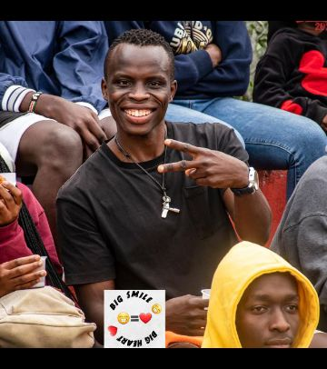
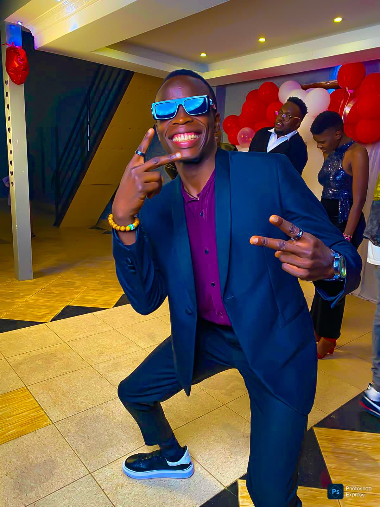

-

Welcome to Big Smile, Big Heart 254 — where every post is a beam of hope and kindness in your feed. We’re all about uplifting stories, heartfelt connections, and small acts with big impact. Whether it’s a reminder to care for yourself, to lend a hand to someone else, or to spread joy in unexpected ways — this space is your daily dose of warmth, inspiration, and human goodness. Join the journey, share a smile, and let’s make kindness contagious across Kenya and beyond.
-

I’m a passionate drummer with years of experience bringing rhythm to life. Behind every beat, there’s heart, precision, and a deep love for the music. Whether it’s on stage, in the studio, or during a jam session, I focus on creating energy that connects and moves people. It’s not just about hitting the drums — it’s about feeling the groove, blending with the sound, and letting every rhythm tell a story.
-

I’m a passionate basketball player with a proven record of success, both individually and as part of the team. Over the years, I’ve earned multiple medals and had the privilege of playing for some of the most respected teams in the game. My strength lies not just in skill, but in teamwork — knowing when to lead, when to assist, and always playing with heart. Every game is a chance to grow, compete, and inspire through dedication and love for the sport.
-

I’m a dedicated computer scientist with a strong background in mathematics and problem-solving. I enjoy turning complex ideas into practical solutions through coding, logic, and analytical thinking. My work blends creativity with precision — whether developing algorithms, optimizing systems, or exploring new technologies. With a passion for continuous learning, I stay updated in the ever-evolving world of computing and innovation.
-

I’m a disciplined and enthusiastic fitness coach with a passion for helping others achieve their best selves. My approach combines smart training, proper nutrition, and a positive mindset to build lasting results. With a strong background in food and beverages, I understand how fueling the body right complements every workout. For me, fitness isn’t just a routine — it’s a lifestyle built on balance, commitment, and continuous growth.